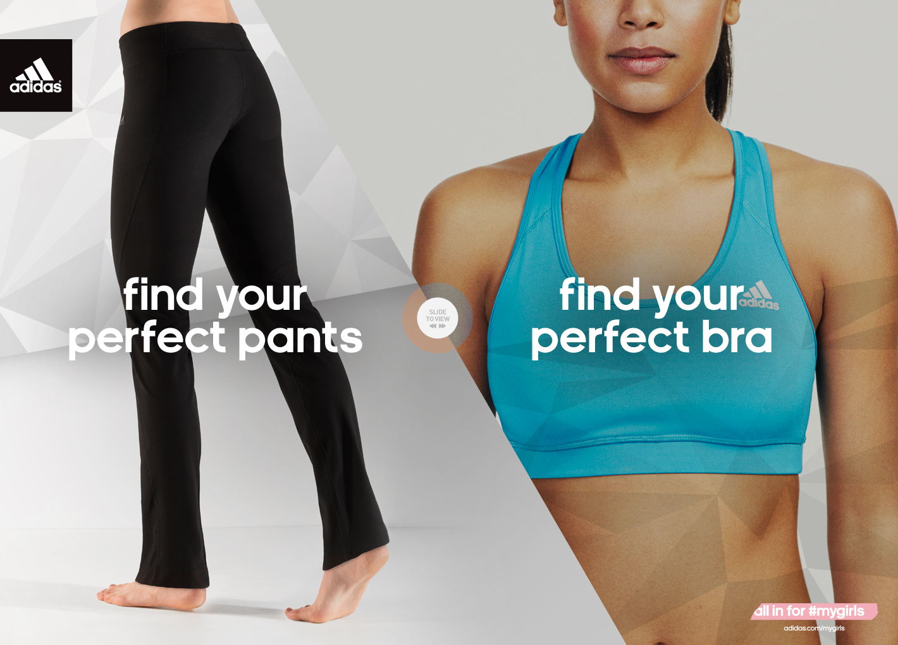

Jessica Burton
Front End Developer
Projects

Underwear Finder for Adidas
Testing and HTML/CSS fixes for Watu
Latest Tweets
Tweets by @JessicaJBurton_
About Me
stuff and things
Skills
HTML/CSS
HAML
SCSS
Adobe Photoshop
Github
Final Cut Pro
Screencasting